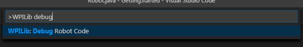
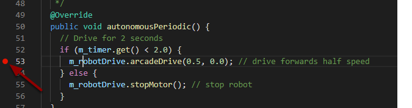

Debugging a Robot Program
Inevitably, a program will not behave in the way we expect it to behave. When this occurs, it becomes necessary to figure out why the program is doing what it is doing, so that we can make it do what we want it to do, instead. Such an undesired program behavior is called a “bug,” and this process is called “debugging.”
A debugger is a tool used to control program flow and monitor variables in order to assist in debugging a program. This section will describe how to set up a debug session for an FRC® robot program.
Note
For beginning users who need to debug their programs but do not know/have time to learn how to use a debugger, it is often possible to debug a program simply by printing the relevant program state to the console. However, it is strongly recommended that students eventually learn to use a debugger.
Running the Debugger
Press Ctrl+Shift+P and type WPILib or click on the WPILib Menu Item to open the Command palette with WPILib pre-populated. Type Debug and select the Debug Robot Code menu item to start debugging. The code will download to the roboRIO and begin debugging.
Breakpoints
A “breakpoint” is a line of code at which the debugger will pause the program execution so that the user can examine the program state. This is extremely useful while debugging, as it allows the user to pause the program at specific points in problematic code to determine where exactly the program is deviating from the expected behavior.
The debugger will automatically pause at the first breakpoint it encounters.
Setting a Breakpoint
Click in the left margin of the source code window (to the left of the line number) to set a breakpoint in your user program: A small red circle indicates the breakpoint has been set on the corresponding line.
Debugging with Print Statements
Another way to debug your program is to use print statements in your code and view them using the RioLog in Visual Studio Code or the Driver Station. Print statements should be added with care as they are not very efficient especially when used in high quantities. They should be removed for competition as they can cause loop overruns.
System.out.print("example");
wpi::outs() << "example\n";
Debugging with NetworkTables
NetworkTables can be used to share robot information with your debugging computer. NetworkTables can be viewed with your favorite Dashboard or OutlineViewer. One advantage of NetworkTables is that tools like Shuffleboard can be used to graphically analyze the data. These same tools can then be used with same data to later provide an operator interface for your drivers.
Learn More
To learn more about debugging with VS Code see this link.
Some of the features mentioned in this VS Code article will help you understand and diagnose problems with your code. The Quick Fix (yellow light bulb) feature can be very helpful with a variety of problems including what to import.
One of the best ways to prevent having to debug so many issues is to do Unit Testing.
Verifying that your robot works in Simulation is also a great way to prevent having to do complex debugging on the actual robot.